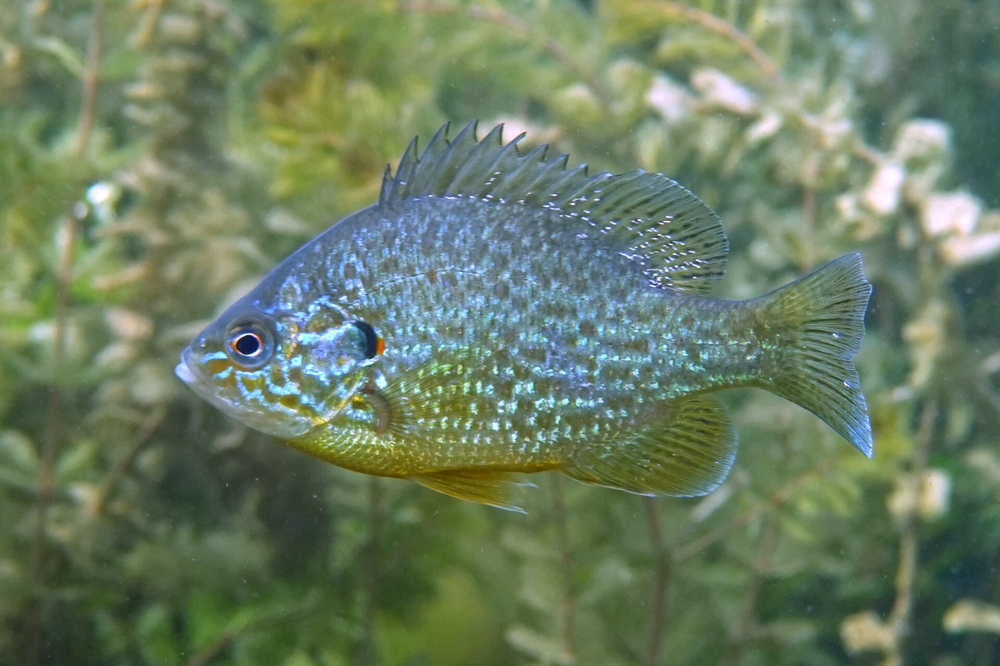
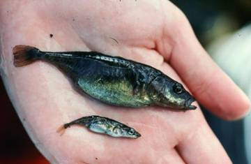
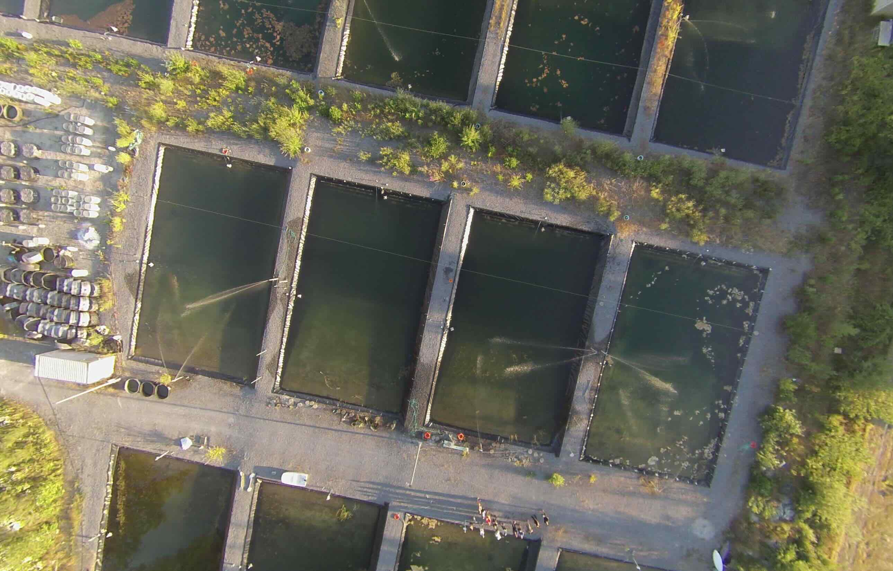

Biomonitoring increasingly fuels formal scientific research. This section will present a selection of interesting stories about biodiversity research on the Coast, and particularly those in which the biomonitoring programs of local non-profits have played or are playing a significant role. More to come!
Research Story
Birds on the move up Tetrahedron
As temperatures rise, mountain species are generally expected to move to higher, cooler elevations to survive, and many are already doing exactly that. Scientists have proposed three main ideas for how this plays out. The "escalator to extinction" suggests a species' range gradually creeps upslope until they simply run out of mountain. The "upslope lean" idea suggests species don't shift their whole range, but instead become more concentrated toward the upper end of where they already live. The "persist-in-place" idea suggests many species simply stay put and adapt.
These ideas are usually tested by tracking whether a species is present or absent in a given area over time. But this misses something important: how many individuals are there? Counting actual numbers gives a clearer picture of whether a population is truly healthy or quietly declining before it disappears from an area entirely. A species that still shows up in surveys could already be in serious trouble if its numbers are falling fast.
Here is a recent local study of birds on the move, including in Tetrahedron Provincial Park, that considered both presence/absence and abundance.
This study, led by Ben Freeman, looked at breeding birds in the old-growth forests of the Pacific Northwest over three decades of warming. Ben was a post-doc at UBC at the time he conducted the study. He had come across some mountain bird surveys conducted by F. Louise Waterhouse in the early 1990s, and recognized that he could build on these to test the reigning hypotheses for climate change effects on mountain species.
Basically, surveys were conducted by walking trails, stopping at a series of set stations, and listening to calls to estimate species' presence and abundance. With these data you can estimate elevational range and abundances within those ranges for each species. This is roughly what Waterhouse did in the early 1990s, and Ben and his team repeated in 2023. Contrasting these datasets and comparing them to temperature records allows one to test hypotheses about range shifts associated with climate change, including the escalator to extinction idea.
The species included in the study were Brown Creeper, Chestnut-backed Chickadee, Hairy Woodpecker, Olive-sided Flycatcher, Pacific-slope Flycatcher, Red-breasted Nuthatch, Red-breasted Sapsucker, Sooty Grouse, American Robin, Pine Siskin, Townsend's Warbler, Red Crossbill, Steller's Jay, Vaux's Swift, Hermit Thrush, Varied Thrush, Canada Jay, American Three-toed Woodpecker, Golden-crowned Kinglet, Pacific Wren, Dark-eyed Junco, and Swainson's Thrush. The surveys were conducted at several sites on mountains north and west of Vancouver.
Here is a figure from their 2025 paper in Ecology illustrating some key hypotheses and their results:
Figure from Freeman et al. 2025, Ecology — illustrating key hypotheses and observed results for mountain bird abundance shifts in the Pacific Northwest.
Key Finding
While ranges were not generally shifting, birds' overall peak abundance zones have shifted upslope at roughly the same rate as temperatures have — supporting the "upslope lean" idea. At present, there is little evidence of species heading toward extinction via the escalator effect, with one stark exception: the Canada Jay, a high-elevation bird, has declined sharply. Tracking abundance, rather than just presence/absence, will be important for spotting warning signs early enough to act.
Freeman, B.G. et al. 2025. Pacific Northwest birds have shifted their abundances upslope in response to 30 years of warming temperatures. Ecology, 106:e70193.
Coast Biomonitoring Projects Fuel Science
Shining a Light on Dungeness Crab Larvae
The Sentinels of Change light trap network tracks the arrival of Dungeness crab larvae along the coast. Launched in 2022, this cross-border program connects scientists, resource managers, and coastal communities from Haida Gwaii down to Puget Sound in Washington. Sentinels of Change and Hakai have just released their 2025 Light Trap Network Report, which demonstrates the value of biomonitoring programs on the Coast.
Dungeness crab matter a lot. They've been a cornerstone of coastal Indigenous life for thousands of years and are one of the most valuable fisheries in both Canada and the US. Understanding how their larvae disperse and survive is key to helping managers keep crab populations healthy as oceans change.
Two local sites, Pender Harbour and Gibsons, are included in this study courtesy of the Loon Foundation and BlueAct Marine Society biomonitoring programs.
2025 was the network's fourth year, with 29 sites participating overall. From mid-April through early fall 2025, community partners checked traps every two days, counting and photographing any Dungeness larvae they caught to track size and abundance. Beyond tracking larvae, the network is also exploring how climate change affects young crabs, how crab populations are connected across the coast, and whether light traps can help detect invasive European green crab. While these studies are ongoing and the analyses just ramping up, the scale of the data collected so far is impressive.
Dungeness crab larvae from the Sentinels of Change Light Trap Network, 2025.
Takeaways from the report.
2025 was a low year for Dungeness crab larvae, with peak timing shifting earlier — from July to June — compared to previous years. Despite light catches, data quality improved thanks to strong partner commitment. With four full seasons now collected, the network is building a meaningful long-term dataset. Work is advancing on environmental modelling, population genetics, and climate linkages. In 2026, the network will expand monitoring, deepen analysis, and launch new research questions. Above all, the network's foundation remains its community-based biomonitoring efforts, including those on the Sunshine Coast.
As oceans warm and ecosystems shift, the birds that depend on them are quietly redistributing and a sweeping 20-year study of coastal waterbirds by de Zwaan et al. document dramatic shifts in distribution along BC's Pacific coast.
Researchers have recently tracked the winter occupancy of 57 waterbird species between 1999 and 2019. The picture that emerged is one of widespread decline, but with important regional twists.
The study rests on a remarkable foundation of volunteer effort. Since 1999, dozens of volunteers in BC, including a number within biomonitoring programs on the Sunshine Coast, have conducted monthly counts along 368 standardized shoreline routes from the Salish Sea to BC's northern coast. This citizen science program, the BC Coastal Waterbird Survey, has accumulated one of the richer long-term bird datasets on Canada's Pacific coast, and it's now paying scientific dividends.
The news was worst for the Salish Sea. Declines there were steep and broad, cutting across most feeding groups (diving ducks, fish-eaters, shellfish-eaters). The cause likely include both warming waters and a suite of impacts associated with human activities including pollution from urban runoff, nutrient loading from rivers, and dense coastal development combine to degrade habitat for species that depend on cold, productive waters.
However, on BC's North-Central coast the story appears quite different. Several species are actually holding steady or increasing there. The likely reason is that this area has maintained cold, less salty water that supports the prey species these birds depend on. In a warming world, these places may function as cold-water refugia.
The clearest signal from the data is directional movement. On average, waterbirds are wintering farther north than they did 20 years ago. Cold-tolerant species are retreating poleward or pulling back into fjord habitats. Meanwhile, herbivores and warm-tolerant species appear to be expanding northward into the Salish Sea from farther south, taking advantage of milder winter conditions there.
The study also tackled an important conservation question: do protected areas actually help? They found evidence that newer marine protected areas show genuine benefits because birds colonize them more readily and disappear from them less often.
Key Findings:
Protecting where birds are today is no longer sufficient. Effective conservation must also anticipate where they're heading tomorrow. Canada has committed to protecting 30% of its coastal waters by 2030, but sits at around 15% today. With birds on the move, static protection won't be enough. New protected areas, particularly along BC's North-Central coast, should target cold-water refugia and the corridors that shifting species now depend on.
de Zwaan et al. 2024. Occupancy trends of overwintering coastal waterbird communities reveal guild-specific patterns of redistribution and shifting reliance on existing protected areas. Global Change Biology 2024;30:e17178.
Research Story
How did Sunfish get into Trout and Colvin Lakes?
Many may have read the 2023 Coast Reporter story "Go fish: How fishers and scientists are racing to protect a world-famous species from invasives." The piece tells the story of the discovery of invasive pumpkinseed sunfish in Trout Lake, which are threatening and may have even led to the extinction of Trout Lake's population of the world-famous threespine stickleback. There will be more on this little fish, the stickleback, that has contributed so much to our understanding of the origin of species (Charles Darwin's "mystery of mysteries") later on this page.
The question does arise: how did the invasive sunfish get into Trout Lake? The answer suggested in the piece is that they were likely introduced deliberately around 2021. Perhaps they were accidentally introduced from a fisher's bait bucket, or perhaps intentionally for sport fishing. However, the piece also notes that sunfish have recently been found in the unconnected Colvin Lake at Sargeant Bay, where the presence of fishers seems unlikely.
One commonly invoked explanation for the movement of invasive fish across long distances to remote lakes is that fish eggs get stuck on the feathers or feet of waterbirds, which then transport them long distances. Even Darwin wrote about this potential phenomenon. However, recent surveys of the scientific literature have found no evidence directly supporting this idea. So how did the sunfish get into Colvin Lake?

Pumpkinseed sunfish by Lorenz Seebauer, Wikimedia Commons, licensed under http://creativecommons.org/licenses/by-nc/4.0/
Sargeant Bay Society streamkeeper, Dave Spicer, suggested that perhaps eggs of sunfish were consumed by birds in Trout Lake and then deposited in their faeces into Colvin Lake. At first pass, this seems even less likely than their being stuck to feet or feathers — delicate fish eggs (think caviar) passing through the gut of a vertebrate and surviving? However, a recent paper shows this is indeed possible.
Hungarian researchers, led by Ádám Lovas-Kiss, fed fertilized eggs of nine fish species to mallards and recovered viable embryos of several species from their droppings, with two species successfully hatching into larvae. The findings establish waterbird gut passage as a rare but plausible natural dispersal mechanism for fish eggs across isolated water bodies, independent of human introduction. Among the species whose eggs survived passage through the gut were pumpkinseed sunfish, though in this very small sample, none developed into larvae.
Key Finding
This new study suggests that fish eggs can indeed pass through a duck's digestive system and remain viable. This means that waterbirds such as ducks may be transporting invasive fish species, including pumpkinseed sunfish, to new lakes. We will probably never know how sunfish got into Trout or Colvin lakes, but this recent study suggests that a single human introduction may lead to further spread through the natural behaviour of ducks.
Lovas-Kiss et al. 2024. Bird-mediated endozoochory as a potential dispersal mechanism of bony fishes. Ecography 2024: e07124
Research Story
Stickleback and the Origin of Species on the Sunshine Coast
Local populations of this widespread little fish have transformed our understanding of the formation of new species. In the lakes and streams of the Coast, this small spiny fish barely the length of your finger has become one of science's most important windows into how new species come to be. And decades of research on the Coast plays a prominent role in these discoveries.
Speciation, the process by which one species splits into two distinct lineages, is notoriously difficult to study. It typically unfolds over vast stretches of time, leaving scientists trying to reconstruct ancient events from fossils and genetic clues. Moreover, it is typically thought that a geographic barrier is necessary to reproductively isolate the diverging population to truly speciate. But in some lakes on the Coast sticklebacks appear to have speciated within a single lake and in a remarkably short period of time.

Stickleback species pair from Paxton Lake, British Columbia. Gravid benthic top, gravid limnetic bottom. Photo by Todd Hatfield.
After the last Ice Age, the rising land isolated populations of marine sticklebacks into lakes. In several of these lakes (Paxton, Priest, Enos and Hadley) something remarkable occurred. Rather than resulting in a single freshwater adapted form in each lake, two distinct types independently evolved from a single ancestor: a nearshore form known as the benthic, and an open-water form known as the limnetic. These two ecotypes, found living side by side in the same lake, have become so specialised in their body shapes, behaviours, and resource use that they rarely interbreed. Similar divergence in body form, behaviour, resource use and even genetics, appears repeatedly across separate lakes. This and the recency of the divergence has allowed researchers to study, both by observation and experiment, the processes that underlie speciation itself. These insights are shedding light on what Darwin referred to as "the mystery of mysteries".

The UBC Experimental Ponds where researchers in Prof. Dolph Schluter's group study the processes involved in the evolution of new species. Photo by Dolph Schluter.
One of the main goals of these studies is to understand what is special about these few post-glacial lakes that have facilitated the evolution of two types, rather than one, which is more typical in nearby lakes. It turns out that rather precise ecological conditions are required, an understanding of which helps researchers to understand the process of speciation itself. However, it also means that ecological disturbance can lead to the collapse of the species pair into just one. This is exactly what happened to the populations on Vancouver and Lasqueti Islands due to the introductions of signal crayfish in one and brown bullhead catfish in the other.
This left just two known populations, Paxton and Priest Lakes on Texada Island, putting at risk one of evolution's great stories. Thankfully, in 2007, a new species pair was found in the previously unexplored Little Quarry Lake on nearby Nelson Island. Involved in that important discovery, and the resulting publication, was Michael Jackson, the long serving past Executive Director of the Loon Foundation.
Takeaways:
Research on the Sunshine Coast has made remarkable contributions to our understanding of biodiversity. The insights from study of the Coast stickleback comprise one of the most important contributions to the resolution of one of evolution's greatest mysteries — the origin of species. Finally, Coast non-profits and their members have been closely involved in this research.
Gow et al., 2008. Ecological predictions lead to the discovery of a benthic–limnetic sympatric species pair of threespine stickleback in Little Quarry Lake, British Columbia. Can J. Zool. 86: 564–571.